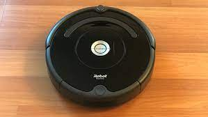

Cleaning Robot
Earlier this year, I coded a program in Java that simulates a house-cleaining robot (similar to a Roomba). This robot mops and vacuums, and is able to detect obstacles and move accordingly.
School Department Database
On top of the house-cleaning robot, I also worked on a software that functions as a database for a school department. The database include heirarchal structures starting with the department head, unique ID numbers for each member of staff, and pay-rates for everyone.
Machine Interpreter
I also spent some time working with C in order to create a program that interprets LC machine language. It supports many instructions such as add, and, bl, brn, brz, add, ld, st, etc.. The interpreter simulates the memory on the LCC, and uses variables to hold the various subfields of the machine language instruction that the interpreter works with.